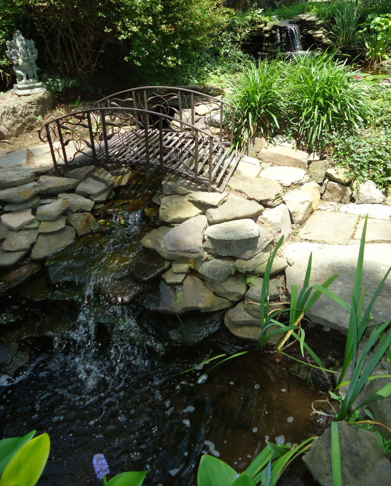
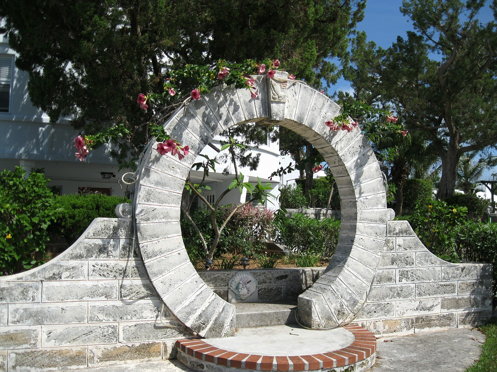
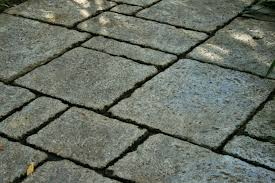

Select theme:
Services
Ponds & Water Features
I’m inspired by nature. I spend much of my time in the countryside, allowing me to get a first-hand look at how Mother nature moves water through her landscape. My goal is to keep people guessing if my water features are artificial or placed there by Mother nature herself.I specialise in creating and maintaining natural looking ponds, waterfalls, streams, fountains and other water features. I can also fully install your own water garden sanctuary. I have seen first-hand how a quality installed pond or waterfall can greatly enhance the quality of life for my clients. Imagine the soothing sounds of running water, the soft glow of underwater lights at night, or being hypnotised by swirling, vibrantly-coloured Koi fish for hours. All of this can be in your very own garden pond or waterfall paradise!

Stonework
One of the most popular and specialist services I provide is stone walling, whether it be mortared or the traditional dry-stone method of construction. My experienced team use a variety of stone including; natural stone, reclaimed stone, sandstone, limestone and Malvern stone. I can supply all types of stone walling, whether you're after a free-standing wall, a retaining wall, a garden wall or a random or coursed wall. We'll even perfect your wall with decorative finishes. Or maybe you have some existing stonework that is need of repair or maintenance? Again, I will be able to help!
Paving
Choosing a design can be an exciting and difficult task. That’s why I will take the time to discuss your requirements and materials to suit your property. I know you can’t wait to sit in the sunshine, and have a barbeque with your friends and family, which is why I’m dedicated to renovating your garden into a beautiful area that you can enjoy all summer long.I specialise in and love to use natural stone paving, with such a wide range of colours and finishes a beautiful piece can be created. However, I also work with concrete based products, including block paving. If you already have a patio, there may be a need for maintenance, such as jet washing, relaying loose paving or repointing, these are all services that I offer.
